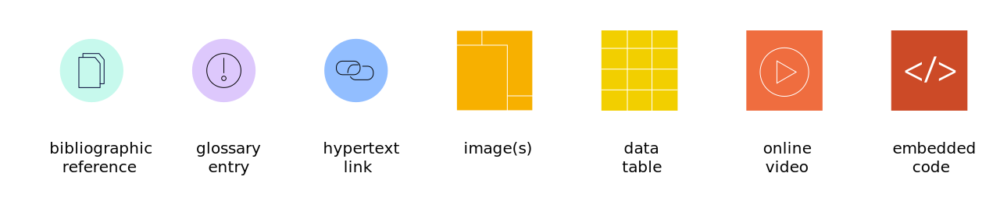
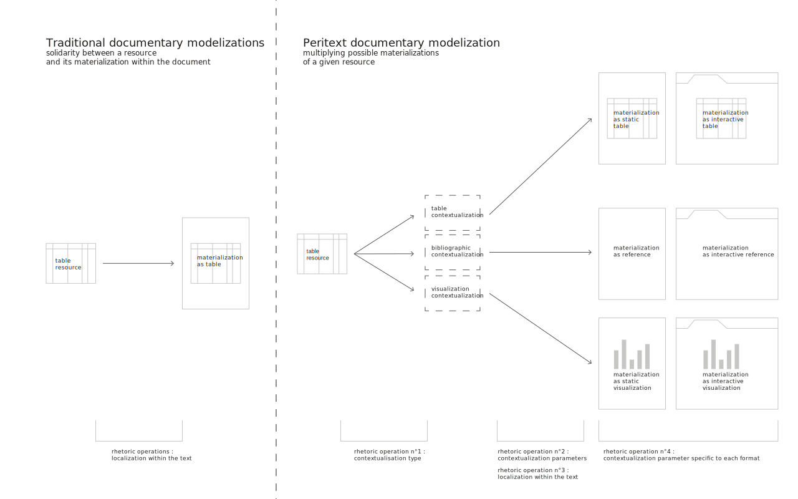

Hello ! welcome to the website of Peritext. There is not much to see on this source, it is dead simple !
Hello ! welcome to the website of Peritext. There is not much to see on this source, it is dead simple !
Peritext is a free and open design and development activity aimed at supporting sensible and polymorphic scholarly publishing practices.
It is oriented toward semi-formal and softly infrastructured editorial contexts, such as the semi-independent publication of research works (theses, working papers, research notebook elements, publications backed by seminar-like events, etc.), publication of companions or attachments to traditional scientific publications, or "peri-scholar" publication contexts, such as those of journalism, amateur scholarly publication or higher education (thesis dissertations, etc.).
allow authors, editors and publishers to use non-discursive elements (images, videos, visualizations,..) in a fine-grained and rich way
offer several editions for several supports (web, print,...) out of common materials, while being able to precisely design the content and aspect of each of them
respect documentary and technical requirements from contemporary scholarly publishing
Peritext is constituted of several interconnected facets :
Ovide, an autonomous, free and easily customizable edition software that allows to design web and print publications.
Why peritext ?
Before and after the act of publication, the texts produced and exchanged by university researchers and other scholars are increasingly linked to the digital environments in which they are embedded.
Indeed, within a wide spectrum of disciplines and publication topics, one can assist to a proliferation in the types and forms of objects which can be activated within a research process ; besides, they often are - unlike in the past - directly and fully accessible within the publications themselves. Evidences of this proliferation can be found in examples as diverse as the increasing use of online audiovisual recordings, the use of social networks and twitter as part of corpora and/or restitution of ongoing debates, the mobilization of open datasets, archives and repositories of digital sources, etc. However, in the most widespread formats of scholarly publishing, traces of the web and other digital resources are still struggling to get out of the page margins: they will be noticed surreptitiously around a footnote (in the form of a discreet hyperlink), or timidly reproduced in a secondary annex, at the end of a bibliographic entry or in the legend of a figure, etc. These connections to external elements refer to rich resources that are often available in their entirety online, but often remain on the threshold of exchanges and arguments: they are almost "erased" from documents once they have been translated and formatted according to the established publication conventions (articles, monographs, proceedings, theses, etc.).
On the other hand, the rise of online publishing, the movement for open access to research results, and new communication practices from researchers - ranging from the use of social networks to the experimentation with various forms of experimental digital publishing - have established an extremely rich situation for the production and circulation of scholarly statements in which they are discussed, criticized, reformatted and published by a multitude of scientific, social and media actors.
Based on this observation, Peritext aims to develop alternative ways of connecting the methods of production of academic documents with the contexts of the web. It is a matter of carrying out a double contextualization: Peritext aims to facilitate and give more meaning to the contextualization of digital & non-discursive resources within scholarly statements, and at the same time it aims at allowing a better contextualization of scholarly statements in digital environments.
Principal dimensions of Peritext ecosystem
Polymorphic writing and publishing
The Peritext data format makes it possible to bring together content and its different modalities of shaping in the same digital representation.
Peritext is inspired by editorial chains making technologies and other initiatives focused on single-source and cross-media publishing initiatives 123, which consist in producing a variety of documents from the same source content.
At the same time, it differs from these technologies in the sense that it does not rely on an automation of formatting methods but rather leaves the auctorial and editorial teams a larger margin of freedom concerning the presentation of content in the various editions of the same production.
A unified and flexible model for handling arguments which deal with non-discursive elements
The Peritext data format makes it possible to support the contextualisation of many external elements in the argumentative structure of a text (bibliographic references, images, tables, possibly visualisable data sets, audiovisual documents, glossary entities, etc.).

A sneak peak of resource types that can be defined in a Peritext production.
To do so, Peritext is based on a mode of representation of content centred on the separation between the resources summoned in a narrative and the different forms that the latter can take within the framework of the argumentation operated by a text. These formatting modalities can be specified very precisely in a parametric way according to the authors' rhetorical intentions, and reused in several places for the case of complex formatting modes (e.g. data visualizations).
This schema represents the peculiar documentary modelization of Peritext, adding a third actor to the traditional "content/form" divide.
Thus, Peritext is betting on a more complex distribution of roles between authors, designers and publishers, in the production of editorial content: it allows authors to take more control in the formatting dimensions traditionally assigned to publishers and designers, in order to allow authors to convene formatting issues more centrally in the development of their arguments.

This schema represents how the Peritext model allows for finer rhetorical use of non-discursive elements in scholarly production.
Respecting documentary and technical norms in scholarly publishing
Peritext's content modeling mode also makes it possible to meet a series of standards specific to scientific publishing in terms of indexing and citability. Thus, the highly structured nature of the content makes it possible to integrate metadata into the content of an edition that allows the harvesting and description of content for scholarly contexts and systems, and also to expose metadata about the resources contextualized inside a specific page, recognizable by robots and bibliographic management software plugins.
Editorial and technical modularity
Peritext is built according to a modular logic that allows a lot of flexibility and variations in the implementation of a specific editorial ecosystem (in terms of targeted media, types of documents supported, etc.). It can be both implemented in collaborative or non-collaborative, infrastructure-rich or infrastructure-less contexts.
Templates, contextualizers, generators, are the three build block types that can be assembled to create a specific editorial stack with Peritext.
In addition to the parameters set out by each of the modules used to compose peritext editions, it gives advanced users the possibility to specify and shape the graphic presentation of documents thanks to the CSS language, which can be used separately for each of the editions produced from the production.
About
Peritext is an open and free project developed in a design research setting. All Peritext modules are shared under the free AGPL license. The project was born in 2013 in the context of a quick expansion of french digital humanities on the one hand, and french design research on the other hand. These two environments shared the necessity to stage in a more elaborate way a various array of heteroclit documents produced by their related research activities.
Why is Peritext named Peritext ?
The name of the project is a reference to the work of the literary scholar Gérard Genette. In his work, "peritext" refer to the elements that surround the main text of a book (title, critical apparatus, ...).
Project history / acknowledgements
2013-2016 : Robin de Mourat is the recipient of a 3 years Ph.D. funding from the french Ministry of Higher Education and Research via ENS Cachan Ph.D. programs to conduct research activities under the direction of Nicolas Thély at Université Rennes 2, in the frame of the research group MONADE. The birth of Peritext is accountable for this stimulating and benevolent environment.
January 2014 — March 2015: Ph.D. research of Robin de Mourat focuses on a participant observation sequence within the team of the project « An Inquiry into Modes of Existence », a philosophical investigation supported by an ecosystem of interconnected printed and web instances. The conduct of commented interviews and of a digital inquiry into the project structure and practices gives a situated preview of problematics and potentialities of polymorphic publishing in academic contexts. An important part of Peritext’s design principles stems this field experience and the numerous exchanges it has allowed.
2015 : redaction by Donato Ricci & Robin de Mourat of a position paper about the AIME project, from which emerges the centrality of the concept of context in contemporary scholarly publishing issues.
June 2015 : organization of the workshop « Open AIME », a design approach to a dialogue between AIME ecosystem (its technical components and design processes) and research situations of other scholars. This workshop allows to draft directions and development perspectives which will be later at the center of Peritext.
January 2016 : collective publication of the article « Clues, Anomalies, Understanding » which constitutes a first iteration of peritext, through the realization of a web site generated from markdown+bibtex+yaml formatted contents.
Summer 2016 : first specification and implementation of Peritext as a single generic javascript library using markdown and bibtex encoded data
2016-2017 : development of Peritext in the frame of the Quinoa project for the médialab sciences po and the FORCCAST program — Peritext format specifications are simplified and rationalized
May-September 2017 : exhibition of the Peritext project at the International Graphic Design Festival of Chaumont, in the track “mapping graphic design research”
June-August 2017 : refactorization of the project as an open ecosystem of modules, writing of a first operational specification of the Peritext data format in JSON-schema, start of the development of a visual editor named Ovide.
February-September 2018 : industrialization and production of the Fonio editing application for usage by +1000 Sciences Po sophomore students in social and political sciences. Fonio is a collaborative edition application which relies on a lightweight version of Peritext schema and shares some of its modules.
January 2019 : publication of the alpha version (functional but instable) version of autonomous Peritext editor application Ovide

{kind=link}
{kind=link}
{kind=link}